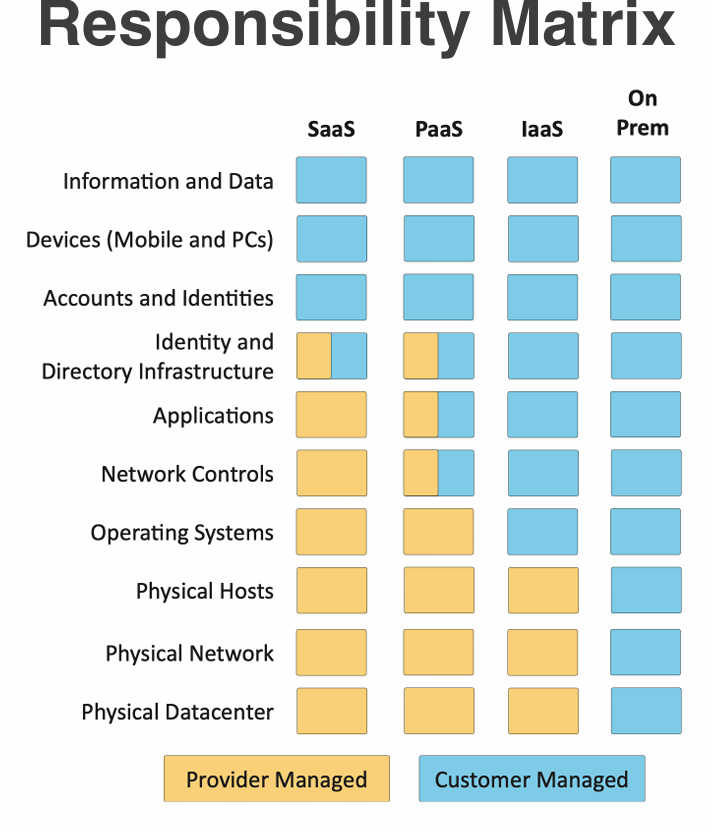
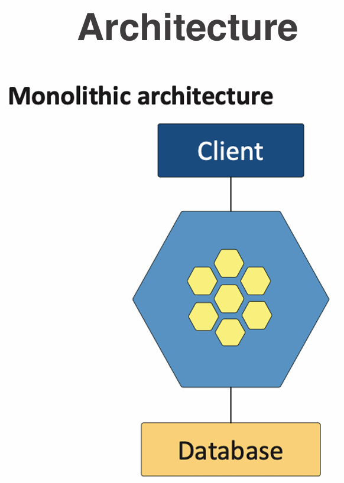
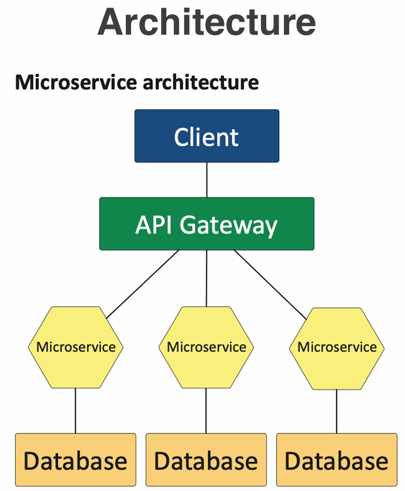

Intro To Cyber
Lecture 16
Date Taken: Fall 2025
Status: Completed
Reference: LSU Professor Joseph Khoury, ChatGPT
Matrix of Responsibilities
A matrix of responsibilities is a document that outlines the specific security responsibilities and obligations of both the cloud service provider and the customer.
It helps clarify who is responsible for various aspects of security in a cloud computing environment, ensuring that both parties understand their roles and duties in maintaining a secure infrastructure.
Examples of responsibilities of cloud providers include physical security of data centers, network security, and infrastructure maintenance.
Examples of responsibilities of customers include data encryption, access management, and compliance with regulations.
(Customer remembering there passwords while cloud provider secures the servers)
Cloud Infrastructures
Cloud infrastructures refer to the virtualized resources and services provided over the internet, allowing users to access computing power, storage, and applications without owning physical hardware.
In more simpler terms, cloud infrastructures enable individuals and organizations to use remote servers hosted on the internet to store, manage, and process data, rather than relying on local servers or personal computers.
This approach offers scalability, flexibility, and cost-efficiency, as users can easily adjust their resource usage based on demand and pay only for what they use.
- Cloud Service Models - describes what layer of computing you are renting from a cloud provider. The purpose of this is to understand the level of control and responsibility you have over the infrastructure. The three main models are:
- IaaS (Infrastructure as a Service) - Provides virtualized computing resources over the internet. Users rent virtual machines, storage, and networks, and have control over the operating systems and applications. Example: Amazon EC2, Microsoft Azure VMs.
- PaaS (Platform as a Service) - Provides a platform allowing customers to develop, run, and manage applications without dealing with the underlying infrastructure. Example: Google App Engine, Microsoft Azure App Service.
- SaaS (Software as a Service) - Delivers software applications over the internet, on a subscription basis. Users access software via a web browser without managing the infrastructure. Example: Google Workspace, Microsoft Office 365.
- Security should be well documented. Most cloud providers provide a matrix of responsibilities outlining what security aspects are managed by the provider and what the customer is responsible for.
- These responsibilities can vary. Different cloud providers may have different approaches and policies regarding security responsibilities. Contractual Agreements define these responsibilities clearly. Responsibility matrix example.
Hybrid Considerations
Hybrid cloud refers to a computing environment that combines both on-premises infrastructure and cloud services, allowing data and applications to be shared between them.
This approach provides greater flexibility and scalability, as organizations can leverage the benefits of both environments while optimizing their existing infrastructure.
- Hybrid Cloud - Combines on-premises infrastructure with public and private clouds, allowing data and applications to be shared between them. The purpose is to provide greater flexibility and optimize existing infrastructure, security, and compliance. This also adds additional complexity in managing security across different environments.
- Network Protection Mismatches - Authentication across platforms, firewall configurations, server settings, and other security measures may not align perfectly between on-premises and cloud environments, leading to potential vulnerabilities.
- Different Security Monitoring - Logs are diverse and cloud specific, making it challenging to have a unified view of security events across hybrid environments.
- Data Leakage - Data is shared across the public internet. This increases the risk of unauthorized access and data breaches if not properly secured.
Third Party Vendors In The Cloud
When using third-party vendors in the cloud, it is crucial to assess their security practices and ensure they align with your organization's security requirements.
This includes evaluating their data protection measures, compliance with regulations, and incident response capabilities.
Additionally, it is important to establish clear contractual agreements that outline the responsibilities and expectations regarding data security and privacy.
- You, the cloud provider, and third parties. Infrastructure technologies, Cloud base applicances. This means understanding the shared responsibility model is crucial.
- Ongoing vendor risk assessments. Part of an overall vendor risk management policy This means regularly evaluating the security posture of third-party vendors to mitigate risks.
- Inclide third party impact for incident response. Everyone is part of the process. This means coordinating with third parties during security incidents to ensure a comprehensive response.
- Constant Monitoring. Watch for changes and unusual activities that could indicate a security threat or breach involving third-party vendors.
Infrastructure as Code
Infrastructure as Code (IaC) is a practice that involves managing and provisioning computing infrastructure through machine-readable configuration files, rather than manual processes.
This approach allows for automation, consistency, and scalability in deploying and managing infrastructure resources.
By treating infrastructure as code, organizations can version control their infrastructure configurations, enabling easier collaboration, testing, and deployment.
- Describe an infrastructure. Define servers, network, and applications as code. This allows for consistent and repeatable deployments.
- Modify the infrastructure and create versions. The same way you version application code. This enables tracking changes and rolling back if needed.
- Use the description (code) to build other application instances. Build it the same way every time base on the code. This ensures consistency across environments.
- An important concept for cloud computing. Build a perfect version every time. This reduces errors and improves reliability.
Server Less Architectures
Serverless architectures allow developers to build and run applications without managing the underlying infrastructure.
In a serverless model, cloud providers automatically handle the provisioning, scaling, and management of servers, allowing developers to focus solely on writing code.
This approach offers benefits such as reduced operational complexity, cost efficiency (pay-as-you-go pricing), and automatic scaling based on demand.
- Function as a Service (FaaS) - Apps are seprated into individual, autonomous functions. Remove the operating system from the equation
- Developer still creates the server-side logic. Runs in a stateless compute container.
- May be event triggered and ephemeral (ephemeral means they exist only for a short duration). May only run for one event.
- Managed by a third party. All OS security concerns are at the third party.


